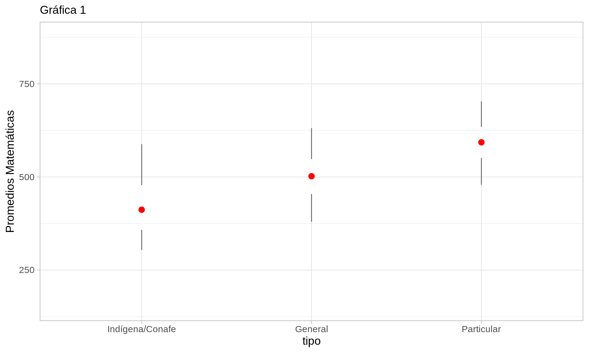
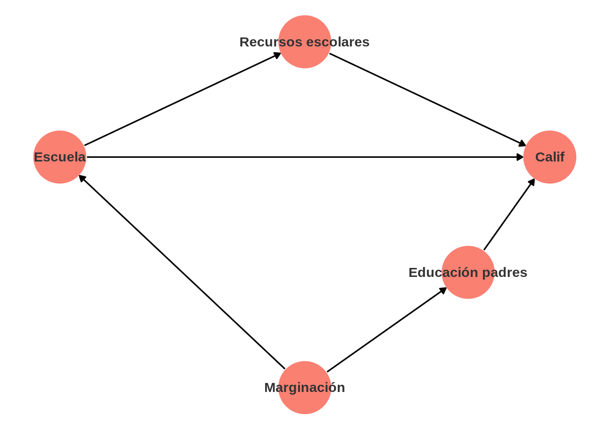
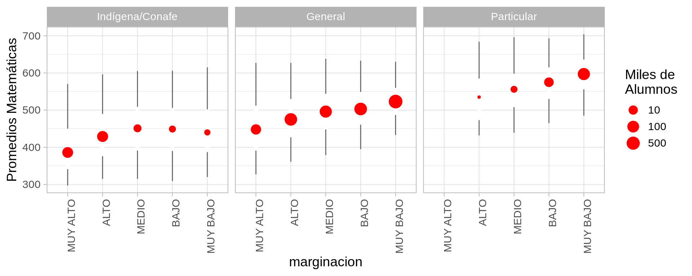

| id | edad | estatura | peso |
|---|---|---|---|
| 1 | 31 | 1.58 | 60 |
| 2 | 42 | 1.72 | 72 |
| 3 | 51 | 1.64 | 56 |
| 4 | 40 | 1.50 | 60 |
| 5 | 30 | NA | NA |
| 6 | 46 | NA | NA |
| 7 | 41 | NA | NA |
| 8 | 36 | NA | NA |
| 9 | 19 | NA | NA |
| 10 | 22 | NA | NA |
| 11 | 48 | NA | NA |
| 12 | 52 | NA | NA |
| 13 | 65 | NA | NA |
| 14 | 63 | NA | NA |
| 15 | 53 | NA | NA |
Inferencia estadística
A grandes rasgos, en la inferencia estadística buscamos hacer afirmaciones acerca de una colección de datos de la cual sólo tenemos información parcial.
Nos concentraremos en dos de las situaciones más comunes:
- Inferencia a poblaciones: el proceso generador de datos “selecciona” a algunos elementos de una población, y queremos decir algo acerca de la población completa.
Por ejemplo, consideremos esta población de 15 personas:
Para una muestra de ellos tenemos información acerca de su estatura y peso. ¿Qué podríamos decir acerca de la estatura y el peso de la población general?
- Inferencia causal: el proceso generador “asigna” tratamientos a una población o parte de ella, y quisiéramos saber cómo se comportarían las unidades tratadas si no recibieran tratamiento, y también cómo se comportarían unidades no tratadas si recibieran el tratamiento.
En este caso, la situación se ve como sigue. Imaginemos que tenemos 15 personas con dolor de cabeza, y obtenemos los siguientes datos:
| id | edad | dolor_con_aspirina | dolor_sin_aspirina | tomo_aspirina | dolor |
|---|---|---|---|---|---|
| 1 | 29 | NA | 3 | 0 | 3 |
| 2 | 64 | 6 | NA | 1 | 6 |
| 3 | 62 | 6 | NA | 1 | 6 |
| 4 | 45 | NA | 3 | 0 | 3 |
| 5 | 39 | NA | 3 | 0 | 3 |
| 6 | 52 | NA | 3 | 0 | 3 |
| 7 | 46 | 6 | NA | 1 | 6 |
| 8 | 31 | NA | 3 | 0 | 3 |
| 9 | 42 | 6 | NA | 1 | 6 |
| 10 | 21 | 6 | NA | 1 | 6 |
| 11 | 44 | NA | 3 | 0 | 3 |
| 12 | 60 | 6 | NA | 1 | 6 |
| 13 | 32 | NA | 3 | 0 | 3 |
| 14 | 58 | 6 | NA | 1 | 6 |
| 15 | 41 | 6 | NA | 1 | 6 |
Nuestra pregunta en este caso es del tipo: ¿ayuda la aspirina a reducir el dolor de cabeza en esta población? ¿qué tanto ayuda? Igualmente, tenemos información incompleta, en el sentido de que sólo observamos un resultado potencial de cada persona, dependiendo de si tomó aspirina o no. Si supiéramos los dos resultados potenciales de cada persona entonces podríamos contestar la pregunta sin dificultad.
Datos incompletos e incertidumbre
Casi por regla general, el hecho de que tengamos datos incompletos implica que una respuesta apropiada a la pregunta incorporará cierto grado de incertidumbre.
Entender si es posible producir respuestas precisas a nuestras preguntas, y si es posible cuantificar correctamente la incertidumbre na la respuesta es una tarea central en la estadística.
Proceso de selección o asignación
Las preguntas que planteamos arriba son difíciles de contestar cuando no conocemos bien el proceso de selección de individuos en la muestra o no conocemos el proceso de asignación de la aspirina.
Por ejemplo, llegaríamos a conclusiones muy distintas si nos dijeran que:
- Escogimos las 5 personas que usan ropa talla chica.
- Escogimos las 5 personas que llegaron primero en una carrera de 100 metros.
- Escogimos las personas cuyo día de nacimiento era más bajo.
O en el ejemplo de la aspirina,
- Sólo dimos aspirinas a las personas que reportaron un nivel de dolor de cabeza muy alto.
- Solo dimos aspirina a las personas que llegaron primero en una carrera de 100 metros.
- Dimos una aspirina exclusivamente a las personas cuyo día de nacimiento es par.
Tip
Discute qué conclusiones podrías llegar en cada uno de estos escenarios.
Los casos 1 y 2 en ambas poblaciones son en general difíciles de resolver adecuadamente, y explicaremos con más ejemplos. Adicionalmente, es también más difícil cuantificar el nivel de incertidumbre de nuestras respuestas, pues dependen de muchos detalles del proceso de selección o asignación.
Proceso generador de datos
Cuando el proceso de selección de observaciones o asignación tiene relaciones complicadas con las cantidades de interés, puede ser muy difícil dar respuesta a preguntas inferenciales de manera adecuada, y es importante entender el proceso que genera los datos, muchas veces a un nivel muy detallado.
Procesos generadores de datos e inferencia causal
Consideramos los datos de ENLACE (2011), y en particular los resultados promedio de matemáticas en sexto grado por escuela. ENLACE era una prueba que se aplicaba en todas las escuelas, de forma que tenemos información de la población completa de interés.
Nos interesa saber cómo varían los resultados en función de el tipo de primaria: pública o privada.
El rango de la calificación de matemáticas para un alumno es de 0-800, y aproximadamente la mitad de los alumnos califica en el rengo de 450 a 550. Vemos dispersión considerable en las calificaciones de las escuelas, y diferencias considerables entre tipo de escuelas:
Código
enlace_tbl <- enlace |> group_by(tipo) |>
summarise(n_escuelas = n(),
cuantiles = list(cuantil(mate_6, c(0.05, 0.25, 0.5, 0.75, 0.95)))) |>
unnest(cols = cuantiles) |> mutate(valor = round(valor))
enlace_tbl |> spread(cuantil, valor) |> formatear_tabla()| tipo | n_escuelas | 0.05 | 0.25 | 0.5 | 0.75 | 0.95 |
|---|---|---|---|---|---|---|
| Indígena/Conafe | 13599 | 304 | 358 | 412 | 478 | 588 |
| General | 60166 | 380 | 454 | 502 | 548 | 631 |
| Particular | 6816 | 479 | 551 | 593 | 634 | 703 |
Podemos graficar de varias maneras, por ejemplo, mostrando los cuantiles 0.05, 0.25, 0.5, 0.75 y 0.95:

Y vemos que las escuelas privadas tienen mejor resultados que las públicas por un margen considerable. Ahora preguntamos: ¿la calidad de las escuelas es lo que causa estos resultados? Por ejemplo, ¿si cambiáramos un niño de una escuela pública a una privada su resultado sería mejor?
Es dificil contestar esta pregunta, porque no entendemos el proceso generador de datos que asigna niños a escuelas. Una posible hipótesis de cómo se asigna el tratamiento y cómo se relaciona con la calificación en Enlace:
Código
library(dagitty)
library(ggdag)
Attaching package: 'ggdag'The following object is masked from 'package:stats':
filterCódigo
dag_cafe <- dagitty('dag{"Escuela" [exposure,pos="-3,3"]
"Calif" [outcome,pos="3,3"]
"Marginación" [pos="0,1"]
"Educación padres" [pos = "2,2"]
"Recursos escolares" [pos = "0,4"]
"Marginación" -> "Escuela"
"Escuela" -> "Calif"
"Marginación" -> "Educación padres" -> "Calif"
"Escuela" -> "Recursos escolares" -> "Calif"
}')
dag_cafe_tidy <- tidy_dagitty(dag_cafe) #|>
#mutate(tipo = ifelse(name == "Cafe" & to == "Cancer", "dotted", "solid"))
dag_cafe_tidy |>
ggplot(aes(x = x, y = y, xend = xend, yend = yend )) +
geom_dag_edges() +
geom_dag_point(colour = "salmon", size = 20) +
geom_dag_text(colour = "gray20") +
theme_dag()
- El grado de marginación del hogar de un estudiante influye en el tipo de escuela al que asiste.
- Pero también influye en la calificación que obtiene el estudiante, por ejemplo actuando mediante el nivel de educación de los padres.
- Esto implica que cuando cruzamos tipo de escuela y calificación obtenida, en parte estamos viendo el efecto que la escuela tiene en los estudiantes, pero también un efecto común de la marginación.
- La comparación entre tipos de escuelas está sesgada si el propósito es estimar el efecto de tipo de escuela en los resultados de los estudiantes.
Código
enlace_tbl_marg <- enlace %>%
group_by(tipo, marginacion) %>%
summarise(n_alumnos = sum(num_evaluados_total),
cuantiles = list(cuantil(mate_6, c(0.05, 0.25, 0.5, 0.75, 0.95)))) %>%
unnest(cols = cuantiles) %>% mutate(valor = round(valor)) %>%
filter( n_alumnos > 20)Podemos considerar el grado de marginación del municipio donde está cada escuela, y vemos la diferencia tan grande se debe en parte a las escuelas privadas tienden estar en municipios de baja marginación. Por ejemplo, los promedios no son tan diferentes para escuelas públicas en zonas de marginación muy baja comparado con escuelas privadas en zonas de marginación alta:

En esta nueva comparación, existen muchos otros factores que probablemente tenemos que pensar, algunos de ellos no estarán disponibles en los datos, y otros puede que se escapen de nuestra consideración.
- El problema central en este análisis es que el proceso generador de datos, en cuanto a quíen le toca ir a cada escuela, es complejo.
- Hacer inferencia causal en este caso es retador y depende de varios supuestos que no son estadísticos.